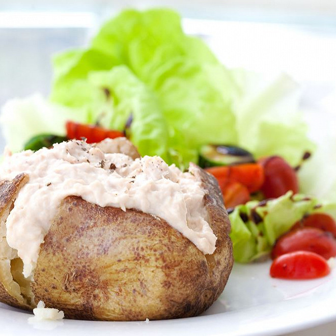

Картофель с тунцом и овощами
Ингредиенты
- 1 средний картофель
- 100 г консервированного тунца
- 1/4 лука
- 1/4 помидора
- 1/4 огурца
- 1 столовая ложка нежирной гречки
- 1 столовая ложка оливкового масла
- 1 столовая ложка уксуса (по желанию)
- Соль, перец и зелень по вкусу